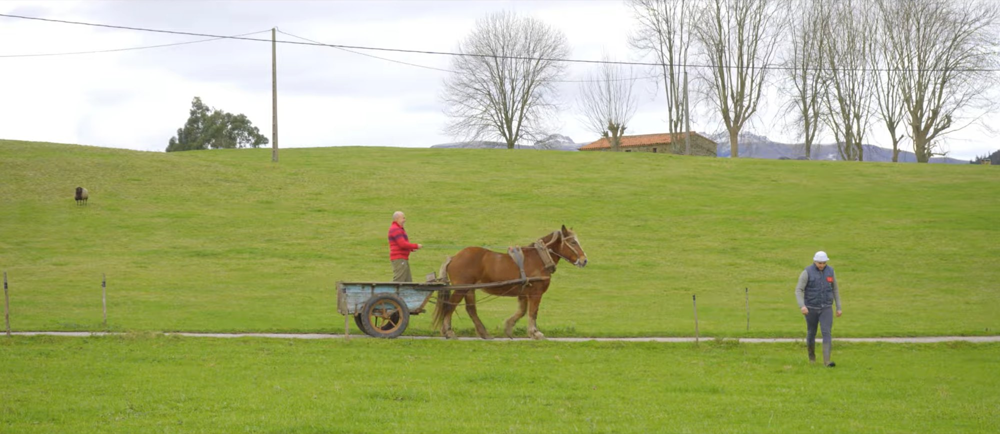
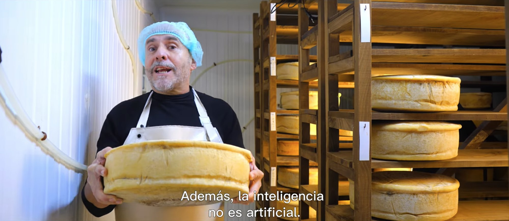
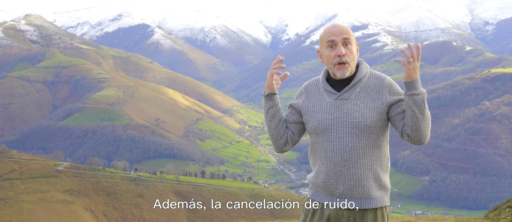
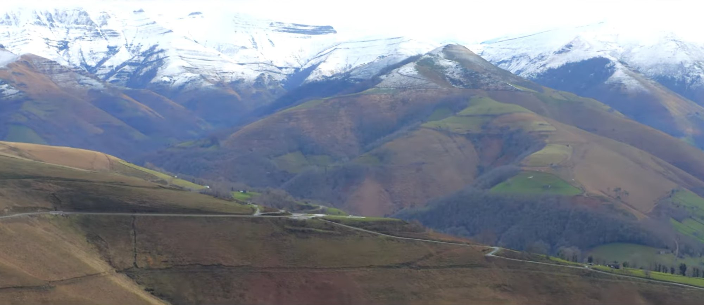

Bienvenido al futuro
The latest technology has always been in the countryside. A short film that presents rural life like a product launch, to get people to look at it, visit it and choose it.

Cover stillPlay- Client
- Calidad Rural, European territorial quality mark
- Date
- 2026
- My role
- Filming and edit
- Format
- Short video for social media
The context
Calidad Rural is the European territorial quality mark for products and services made in rural areas: cheese, honey, cured meats, crafts or rural tourism, produced with differentiated quality, respect for the environment and social responsibility. The goal of the campaign was to give rural life visibility and encourage people to consume what the countryside produces.
The idea
Bienvenido al futuro borrows the language of technology launches and turns it towards the countryside. A cheesemaker in his ageing room, a horse and cart, the snowy mountains: rural life presented feature by feature, like the latest device. Intelligence that isn’t artificial. Real noise cancellation. Behind the humour, a commitment to rural life and to respect for nature and animals.
Stills

Still 01
Still 02
Still 03The result
More than 300,000 organic views, with no paid promotion, for a message that is usually hard to place in front of urban audiences: that the countryside is not the past, but a way of living and producing worth choosing.